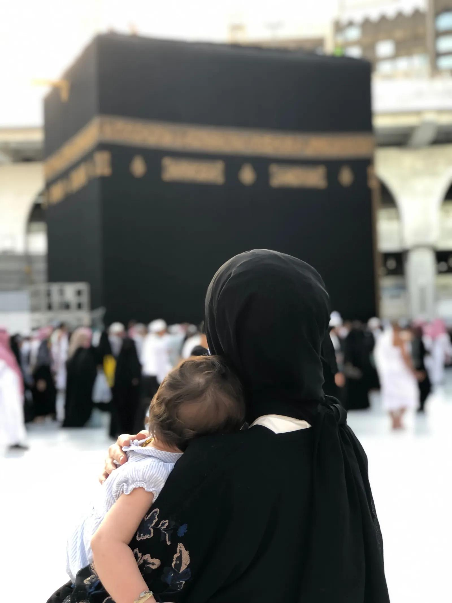

Umrah · Women Travellers
Women Travelling Alone for Umrah — Rules, Mahram, Visa & Safety Tips

It is now one of the questions sisters ask most: can a woman travel for Umrah on her own, without a mahram? For many years the answer, in visa terms, was no — a male guardian was a condition of the journey. That changed in 2022, and today thousands of women make the journey alone or in the company of other women. This guide separates the two things that are often mixed together: what the Saudi rules allow, and what the classical religious position says — so you can plan with clear eyes.
The rule today — no mahram required: In 2022, Saudi Arabia's Ministry of Hajj and Umrah announced that women of any age may perform Umrah without a mahram. The mahram condition was removed: a woman can be issued an Umrah visa, book her permits and travel on her own or with a group of women. No mahram letter and no male guardian's permission is required for the visa.
Visa and permits — the steps:
- Step 1 — Visa: Apply for an Umrah visa through an approved agent or platform, or use the tourist eVisa if your nationality is eligible — both allow Umrah. Our Umrah Visa 2026 guide explains the types, requirements and how to apply.
- Step 2 — Nusuk app: Register in the Nusuk app with your passport and visa details, exactly as printed on your documents.
- Step 3 — Permits: Book your Umrah permit and, in Madinah, your Rawdah permit — women have their own Rawdah visiting times, so choose the women's service in the app. Our Nusuk App Guide walks through every screen.
- Step 4 — Save offline copies: Screenshot your visa, permits, hotel bookings and return ticket, so nothing depends on mobile signal.
Practical safety tips for travelling alone:
- Stay near the Haram: Book a hotel a short, well-lit walk from Masjid al-Haram in Makkah and from the Prophet's Mosque in Madinah, so you are never walking far, or late, on quiet streets.
- Travel in company where you can: Join other sisters from your hotel or an organised group for Ziyarat trips and intercity travel; inside the two mosques, the women's sections are busy and supervised at all hours.
- Keep documents and emergency numbers handy: Carry your hotel's address card, keep copies of your passport and visa on your phone, and save the numbers that matter — Saudi emergency 911, your hotel, your airline and your country's embassy or consulate.
- Share your plan: Send your itinerary and hotel details to family at home before you fly, and check in with them each day.
- Use official transport: Take licensed taxis or ride-hailing apps rather than unmarked cars, and keep your phone charged with a power bank in your handbag.
With the visa rule clear, your permits booked in the Nusuk app and these simple precautions in place, travelling alone for Umrah is a journey many women now complete safely and peacefully — may Allah accept it from every sister who undertakes it.
Quick questions:
- Can a woman get an Umrah visa without a mahram? Yes. Since the Ministry of Hajj and Umrah's 2022 announcement, women of any age can be issued an Umrah visa and perform Umrah without a mahram — travelling alone or in a group of women.
- Does the visa rule settle the religious question? No — it is a travel rule, not a fatwa. The hadith on travelling with a mahram (Sahih al-Bukhari 1088; Sahih Muslim 1339) lead scholars to different conclusions for different situations, so consult a trusted scholar about your own case.
- Where should a woman travelling alone stay? As close to the mosques as your budget allows — around Masjid al-Haram in Makkah and the central Markaziyah area by the Prophet's Mosque in Madinah. Short walks on busy, well-lit streets make the biggest practical difference.
Sources: Nusuk — Official Site ↗ · Sahih al-Bukhari 1088 — Sunnah.com ↗ · Sahih Muslim 1339 — Sunnah.com ↗